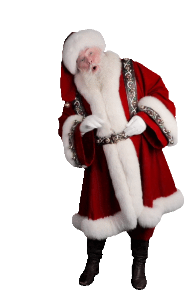
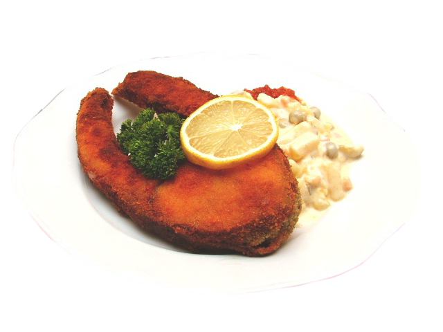

🎅 Santa Claus vznikol na základe svätého Mikuláša, ktorý rozdával dary chudobným. Coca-Cola mu dala dnešnú podobu v 30. rokoch.

🎄 Najvyšší vianočný stromček meral 85 metrov a bol vyzdobený 3 miliónmi sviečok v Rio de Janeiro.

🐟 Vyprážaný kapor so zemiakovým šalátom sa stal tradíciou až v 19. storočí vďaka Magdalene Dobromile Rettigovej.

❄️ Predstava bielych Vianoc pochádza z malej doby ľadovej medzi 16. a 19. storočím.
🎁 Vianočné darčeky sú staré viac ako 1000 rokov! Prvé vianočné darčeky sa darovali už v 4. storočí. Vtedajší darcovia ich nechávali pod vianočným stromčekom.
🎶 Vianočný film *Tichý večer* vznikol v roku 1818. Pieseň, ktorá je dnes celosvetovo obľúbená, bola pôvodne napísaná pre katolícku bohoslužbu v Rakúsku.